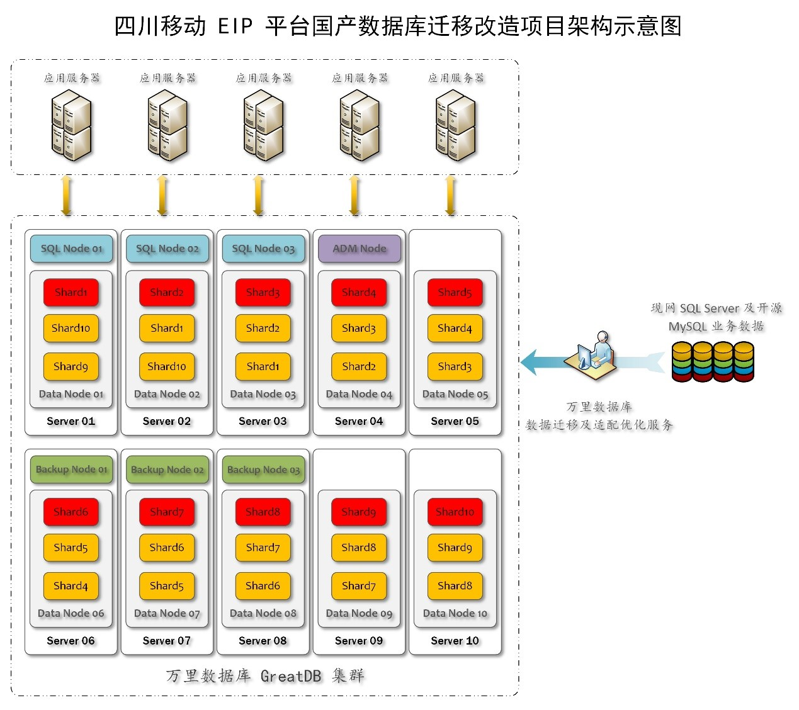

解决方案 | EIP系统国产化进行时！GreatDB分布式10节点实现系统高可用
某运营商企业信息门户（EIP）系统，作为一套基于数据核心与应用驱动的综合性企业级信息管理平台，旨在通过高度自动化的方式优化业务流程与提升运营效率。该系统构建于先进的信息系统架构之上，能有效集成企业内部多样化的异构数据源，转化并呈现为统一且易于访问的数据视图，从而为不同层级的用户提供个性化的工作界面与决策支持。
面对信创大潮和国家安全战略要求，该运营商EIP系统积极响应国家号召，大力推进IT系统国产化进程。在国际环境复杂多变背景下，实现核心技术自主可控已成为企业发展的必然选择。EIP系统国产化不仅是一项技术升级任务，更是保障企业信息安全、提升技术竞争力的关键举措。
通过采用国产数据库、服务器、中间件等软硬件产品，致力于为EIP系统构建起从底层架构到上层应用全面国产化的信息生态系统。这一转型升级不仅增强了系统安全性与稳定性，减少了外部技术依赖，还促进了国内信息技术产业生态发展，符合国家信息技术应用创新战略导向。
EIP系统对数据库有哪些需求？
兼容性与延续性：数据库需要具备优秀的兼容性，对系统上下游软硬件实现兼容，确保数据库替换后，数据结构与业务逻辑实现无缝衔接，将业务系统的影响降至最低，保证系统运行的稳定性与延续性；
灵活敏捷：要求新替换的国产数据库能灵活应对业务系统和应用场景的变化，易于与现有及未来的应用软件集成，从而实现业务敏捷；
架构稳定性：作为该运营商的综合性企业级信息管理平台，数据库需要构建稳定可靠的底层技术架构，支撑高并发业务需求；
数据安全性：需要数据库具备高度的数据安全性，提供强大的数据保护措施，确保数据隐私与完整性。
GreatDB分布式十节点部署方案 满足客户多重核心需求
基于客户对数据库的高可靠、高性能、安全性、国产生态兼容等多方面应用需求，万里数据库技术团队制定针对性解决方案，采用10节点构建GreatDB分布式数据库集群，确保数据的高可用性和容灾能力。同时，GreatDB分布式数据库集群内所有节点都基于Paxos协议，确保元数据与业务数据的强一致性。通过智能数据分片策略，合理分配数据至各节点，结合负载均衡机制，优化资源利用，提升系统吞吐量。
GreatDB分布式数据库，满足客户核心诉求
高可靠：GreatDB分布式通过跨节点容灾与故障自动切换机制，保障RPO=0，RTO＜60s，满足核心业务连续性要求，实现系统高可靠；
高性能：GreatDB分布式数据库架构下，实现10节点并行处理，有效提升系统高并发处理能力；
平滑迁移：GreatDB对SQL Server语法拥有良好的支持能力，可简化迁移路径，实现业务系统的无缝平滑迁移，降低业务中断风险；
国产上下游生态兼容：GreatDB分布式数据库全面兼容国产服务器、操作系统及中间件等全栈国产软硬件，适配全国产信创环境，满足客户信息系统全面国产化要求；
数据安全：GreatDB数据库通过国家安全可靠测评，是国家层面认可的信创数据库产品，可为业务系统提供安全可靠的产品技术保障。

▲某运营商省公司EIP 平台国产数据库迁移改造项目架构图
数据迁移+监控，最低成本实现数据库迁移
GreatDTS工具：采用万里数据库研发的数据迁移服务平台GreatDTS，实现从SQL Server数据库到GreatDB安全数据库的高效数据迁移，包括全部存量数据迁移与增量数据同步，确保数据迁移的高效与准确性；
迁移过程监控：迁移期间，利用万里数据库研发的GreatADM运维管理平台实时监控数据迁移状态，及时响应并解决问题，确保迁移过程平稳顺畅进行。
全生命周期运维管理，省时省力更省心
GreatADM运维管理平台：为EIP系统部署GreatADM运维管理平台，提供性能监控、故障预警、备份恢复及参数优化等多功能在内的统一运维管理服务，实现数据库全生命周期运维管理，大幅提升运维管理能力，降低人员成本及运维难度；
操作与培训：万里数据库为运维技术团队提供专业的培训服务，确保技术团队熟练掌握GreatDB数据库的运维技巧及故障排查方法。
方案优势
高可用
通过GreatDB分布式数据库的10节点分布式部署，结合故障自动切换机制，保障业务持续稳定运行；
性能优化
GreatDB分布式并行处理架构，能显著提升系统处理能力，满足业务高并发需求；
无缝迁移
良好的SQL Sever兼容能力，大幅减少了迁移障碍和难度，确保业务快速、平滑切换至国产数据库GreatDB；
运维便捷
配备多功能、全流程、集成化的运维管理工具GreatADM，有效提升数据库运维管理效率，降低人力与资金投入成本。
综上所述，万里数据库提供的GreatDB分布式数据库10节点部署方案，不仅能有效帮助客户替代原有SQL Server数据库，实现数据处理的高性能与高可用，还能让客户依托全国产生态，增强整体业务系统的安全性与技术自主可控能力，实现国产化升级的同时，做到降本增效。